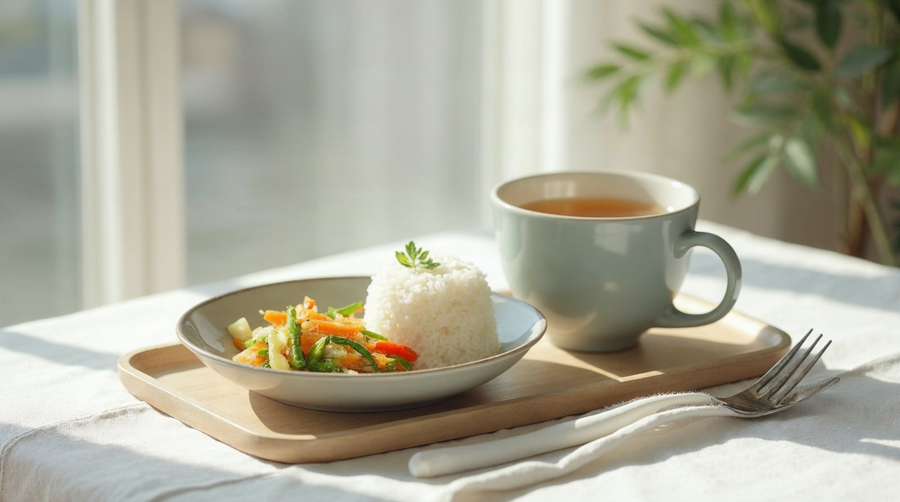
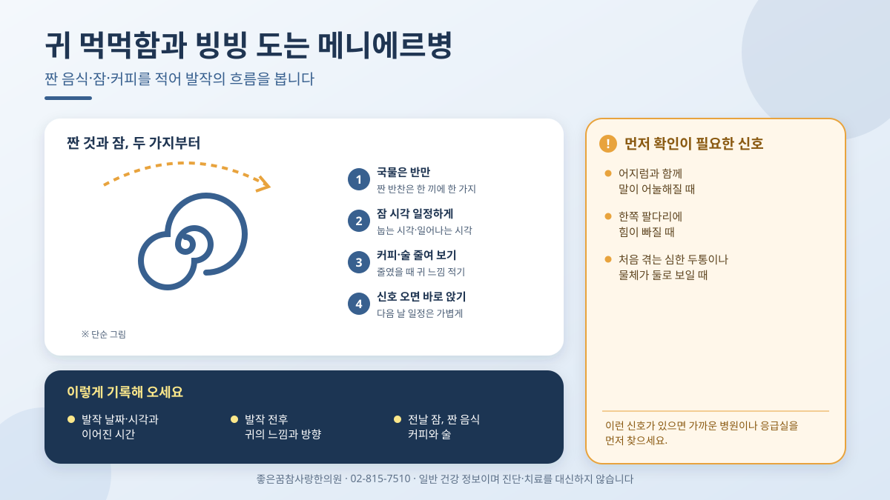

이종호 한의사 감수좋은꿈참사랑한의원 대표원장 (한의사 면허번호 19769)발행 2026-11-26 · 수정 2026-11-26
이 글의 차례
저녁 설거지를 하는데 한쪽 귀가 비행기에서 내릴 때처럼 꽉 막힌 느낌이 듭니다. 귓속에서 '웅' 하는 낮은 소리도 함께 들립니다. 침을 삼켜 봐도 뚫리지 않고, 조금 지나자 싱크대가 옆으로 흘러가듯 방이 돌기 시작합니다.
결국 그 자리에 주저앉아 눈을 감고 한참을 버티게 됩니다. 속이 메스꺼워 몇 번이고 헛구역질을 하고, 몇 시간이 지나서야 겨우 일어나 잠자리에 듭니다. 다음 날 아침에는 언제 그랬냐는 듯 멀쩡한데, 귀는 아직 조금 먹먹합니다.
이렇게 귀의 먹먹함, 귀울림, 청력 변화와 함께 빙빙 도는 어지럼이 수십 분에서 몇 시간씩 되풀이된다면 메니에르병을 떠올려 봅니다. 메니에르병은 속귀(내이) 안을 채운 림프액의 압력이 높아지면서 듣는 기관과 균형을 잡는 기관이 함께 흔들리는 상태로 알려져 있습니다.
진단과 치료는 이비인후과에서 받으시고, 한의원에서는 그 곁에서 잠과 피로, 식사와 몸의 붓기, 마음의 긴장을 함께 살핍니다.
어지럼을 겪는 분들이 진료실에서 가장 많이 하시는 말씀은 "언제 또 올지 몰라서 무서워요"입니다. 버스를 타기도, 회의에 들어가기도, 혼자 장을 보러 나가기도 조심스러워집니다. 그 불안이 얼마나 하루를 좁게 만드는지 잘 알고 있습니다.
왜 귀가 먹먹하다가 빙빙 도는 어지럼이 올까요
우리 귀의 가장 안쪽에는 달팽이 모양의 듣는 기관과, 고리 모양의 균형 기관이 붙어 있습니다. 이 두 기관은 림프액이라는 맑은 액체로 채워져 있고, 이 액체의 양과 압력이 일정하게 유지되어야 소리도 균형도 제대로 전해집니다.
메니에르병에서는 이 림프액이 많아지면서 속귀 안의 압력이 높아진 상태가 바탕에 있다고 설명합니다. 압력이 높아지면 귀가 꽉 찬 듯 먹먹해지고, 낮은 소리가 울리며, 균형 기관이 갑자기 엉뚱한 신호를 보내 세상이 도는 느낌이 생깁니다.
왜 림프액이 늘어나는지는 아직 한 가지로 설명되지 않습니다. 다만 짠 음식, 잠 부족, 과로, 심한 스트레스, 날씨 변화 같은 것이 발작을 부르는 계기가 되는 경우가 많다고 알려져 있습니다.
처음에는 발작이 지나가면 청력도 거의 돌아오는 경우가 많습니다. 하지만 발작이 되풀이되면서 낮은 소리부터 조금씩 잘 안 들리게 되는 흐름을 보이기도 합니다. 그래서 귀의 변화를 꾸준히 확인하는 일이 중요합니다.
한의학에서는 이런 어지럼을 현훈(眩暈)이라 부르며 오래전부터 살펴 왔습니다. 몸에 물기가 고여 잘 돌지 않는 상태를 담음(痰飮)이라 부르는데, 붓기와 메스꺼움, 머리가 무거운 느낌이 함께 있는지를 보며 몸 전체의 흐름을 읽으려 합니다.
이석증, 전정신경염과는 어떻게 다를까요
빙빙 도는 어지럼이라고 모두 메니에르병은 아닙니다. 비슷해 보이는 어지럼을 나눠 보면 이렇습니다.
이석증(양성 돌발성 체위성 현훈)
이석증은 눕거나 돌아누울 때, 고개를 들거나 숙일 때 갑자기 돌다가 1분 안쪽으로 가라앉는 경우가 많습니다. 자세를 바꿀 때마다 짧게 반복된다는 점, 귀가 먹먹하거나 잘 안 들리는 증상이 없다는 점이 메니에르병과 다릅니다.
전정신경염
전정신경염은 감기 뒤 같은 때에 심한 회전성 어지럼이 갑자기 시작되어 하루 넘게 이어지고, 그 뒤 며칠에서 몇 주에 걸쳐 서서히 가라앉습니다. 청력은 대개 그대로라는 점이 메니에르병과 다릅니다.
편두통성 어지럼
두통이 있던 분이 어지럼을 되풀이해 겪고, 빛이나 소리에 예민해지는 느낌이 함께 온다면 편두통과 이어진 어지럼을 살피기도 합니다. 귀 증상이 겹칠 수도 있어 이비인후과와 신경과에서 함께 확인하는 경우가 있습니다.
일어설 때 아찔한 어지럼
앉았다 일어설 때 눈앞이 캄캄해지고 핑 도는 느낌은 혈압이나 혈액 흐름과 관련된 경우가 많습니다. 주변이 빙빙 돈다기보다 몸이 붕 뜨는 느낌에 가깝고, 귀 증상은 대개 없습니다.
발작이 오기 전 몸이 보내는 신호
메니에르병을 오래 겪은 분들은 발작 전에 귀가 먼저 알려 준다고 하십니다. 한쪽 귀가 차오르는 듯 먹먹해지고, 평소와 다른 낮은 울림이 커지는 순간이 있습니다.
이런 신호를 알아 두면 그때 할 수 있는 일이 생깁니다. 운전 중이라면 안전한 곳에 차를 세우고, 계단이나 높은 곳에 있다면 바로 앉을 자리를 찾습니다. 가방에 이비인후과에서 받은 약이 있다면 안내받은 대로 챙기는 것도 이때입니다.
발작이 지나간 뒤에도 하루 이틀은 몸이 휘청이고 기운이 빠진 느낌이 남을 수 있습니다. 그 시간에 무리해서 밀린 일을 처리하려 하면 다시 피로가 쌓입니다. 발작 다음 날은 일정을 가볍게 비워 두시길 권합니다.

짠 음식과 물, 카페인은 어떻게 할까요
메니에르병이 있다고 하면 이비인후과에서 소금을 줄이라는 안내를 받는 경우가 많습니다. 짠 음식을 먹으면 몸이 물을 붙잡아 두려 하고, 그 흐름이 속귀의 압력에도 영향을 준다고 보기 때문입니다.
국물 요리를 즐기는 우리 식탁에서는 국물을 반만 드시는 것부터 시작해 볼 만합니다. 김치, 장아찌, 젓갈, 라면, 햄과 소시지처럼 소금이 많은 음식은 한 끼에 한 가지만 고르는 식으로 줄여 가 보세요.
물은 한꺼번에 많이 마시기보다 하루에 걸쳐 나누어 드시는 편이 좋습니다. 커피와 술은 어지럼을 겪는 동안 귀 울림이나 메스꺼움을 키운다고 느끼는 분이 많아, 줄여 보며 내 몸의 반응을 기록해 보시길 권합니다.
한 번에 모든 것을 바꾸려 하면 오래가지 못합니다. 이번 주에는 국물 반 남기기, 다음 주에는 저녁 커피 끊기처럼 하나씩 더해 가는 것이 실제로 이어 가기 쉽습니다.
청력은 어떻게 지켜보면 좋을까요
메니에르병에서는 어지럼이 워낙 힘들어 귀의 변화는 뒤로 밀리기 쉽습니다. 그런데 오래 보면 생활에 더 큰 영향을 주는 것은 청력인 경우도 많습니다. 그래서 이비인후과에서 정기적으로 청력 검사를 받으며 흐름을 확인하시길 권합니다.
집에서는 전화를 어느 쪽 귀로 받는지, 텔레비전 소리를 예전보다 키우게 되었는지, 낮은 목소리가 잘 안 들리는지를 가끔 살펴보세요. 이런 작은 변화가 검사 결과와 함께 놓이면 지금 어디쯤 와 있는지 가늠하는 데 도움이 됩니다.
시끄러운 곳에 오래 있으면 귀가 더 피곤해지고 울림이 커진다고 느끼는 분이 많습니다. 공연장이나 공사장 근처처럼 소음이 큰 곳에서는 귀마개를 쓰고, 이어폰 소리는 작게 두는 습관을 들여 보세요.
잠과 피로는 왜 함께 살필까요
진료실에서 발작이 왔던 주간을 함께 되짚어 보면, 잠이 모자랐거나 일이 몰렸거나 마음 쓰이는 일이 겹쳤던 때라는 말씀을 자주 듣습니다. 꼭 그렇다고 단정할 수는 없지만, 내 몸의 흐름을 아는 단서로 삼을 만합니다.
밤늦게까지 깨어 있는 날이 이어지면 몸의 회복도 늦어집니다. 바쁜 시기일수록 잠자리에 드는 시각 하나만큼은 지켜 보시고, 낮에 잠깐이라도 눈을 감고 쉬는 틈을 일정에 넣어 두시길 권합니다.
먼저 이렇게 여쭙니다
처음 오시면 저는 대략 이런 순서로 여쭙습니다. 기억나는 것부터 말씀해 주셔도 괜찮습니다.
- 어지럼은 빙빙 도는 느낌인가요, 붕 뜨거나 아찔한 느낌인가요?
- 한 번 오면 몇 분, 몇 시간 정도 이어지나요? 한 달에 몇 번쯤인가요?
- 어지럼 전후로 한쪽 귀가 먹먹하거나 울리거나 잘 안 들렸나요?
- 어지럼이 올 때 메스꺼움이나 구토가 함께 있나요?
- 이비인후과에서 청력 검사를 받으셨나요? 지금 드시는 약은 무엇인가요?
- 발작이 오기 전 며칠 동안 잠, 피로, 짠 음식, 스트레스는 어땠나요?
어지럼만 여쭙지 않고, 그 어지럼이 생활을 어떻게 바꿔 놓았는지도 함께 여쭙습니다. 외출을 피하게 되었는지, 운전을 그만두었는지, 잠을 설치는지가 다음에 무엇부터 챙길지를 정해 줍니다.
일상에서 먼저 해 볼 수 있는 것
발작을 완전히 막을 수는 없지만, 몸이 흔들리는 바탕을 덜 만드는 요령은 있습니다. 아래에서 지금 할 수 있는 것 하나부터 골라 보세요.
- 국물은 반만, 짠 반찬은 한 끼에 한 가지만
- 잠자리에 드는 시각과 일어나는 시각을 일정하게 맞추기
- 커피와 술은 줄여 보고, 줄였을 때의 귀 느낌을 적어 두기
- 발작 신호가 오면 바로 앉거나 누울 수 있는 자리 찾기
- 발작 다음 날은 일정을 가볍게 비워 두기
- 귀가 먹먹하거나 청력이 달라진 날을 달력에 표시하기
어지럼이 무서워 하루 종일 누워만 지내면 오히려 균형 감각이 무뎌지기 쉽습니다. 발작이 지나간 뒤에는 집 안을 천천히 걷는 것부터, 그다음은 집 앞 짧은 산책으로 조금씩 움직임을 늘려 가시길 권합니다.
밤에 화장실에 갈 때 어지러울까 걱정되시면 침대 옆과 복도에 작은 불을 켜 두세요. 일어날 때는 바로 서지 말고 침대 끝에 잠시 앉아 숨을 고른 뒤 일어나는 습관이 도움이 됩니다.
마음의 긴장도 흐름에 영향을 줍니다. 잠들기 전 어깨를 천천히 내리고 숨을 길게 내쉬는 시간을 하루 몇 분이라도 가져 보세요. 늘 다음 발작을 기다리며 몸을 잔뜩 웅크린 채 지내면, 그 긴장 자체가 피로가 됩니다.
한의원에서 함께 살필 수 있는 경우
- 이비인후과 치료를 받으면서 잠과 피로, 몸의 붓기를 함께 살피고 싶은 경우
- 발작이 지나간 뒤에도 머리가 무겁고 속이 메스꺼운 느낌이 오래 남는 경우
- 어지럼이 무서워 목과 어깨가 늘 굳어 있고 잠을 설치는 경우
- 어떤 때 발작이 잦아지는지 생활 흐름을 함께 정리해 보고 싶은 경우
좋은꿈참사랑한의원에 처음 오시면 이비인후과 진료 여부와 청력 검사 결과, 드시는 약을 먼저 확인합니다. 그다음 양손을 올려 달라고 말씀드리고 맥을 짚으며 잠과 소화, 붓기, 대소변, 몸이 찬지 더운지를 여쭙습니다.
진찰 뒤에는 상태에 따라 목과 어깨의 굳은 근육, 손발의 자리를 살피며 침을 상의할 수 있습니다. 어지럼이 심한 날에는 누운 자세를 오래 유지하기 어려울 수 있으니, 그날 몸 상태를 먼저 말씀해 주시면 편한 자세를 함께 찾습니다.
한약은 진찰 뒤 필요하다고 판단될 때 상의합니다. 이비인후과에서 받은 약이 있다면 이름을 모두 알려 주세요. 함께 드셔도 되는지 신중하게 확인하고 정합니다. 처방받은 약은 처방한 의사와 상의 없이 줄이거나 끊지 않습니다.
다시 오시면 지난번 이후 발작이 몇 번 있었는지, 귀의 느낌은 어땠는지, 잠과 식사는 어땠는지부터 이어서 여쭙습니다. 한 번의 진료보다 그 사이의 기록이 다음 길을 정하는 데 더 많은 것을 알려 줍니다.
이렇게 기록해 오시면 상담이 쉬워집니다
어지럼은 지나가고 나면 막상 진료실에서 설명하기가 어렵습니다. 한 달만 적어 보세요.
- 발작이 온 날짜와 시각, 이어진 시간
- 발작 전후 귀의 느낌(먹먹함, 울림, 소리가 작게 들림)과 어느 쪽 귀인지
- 메스꺼움이나 구토가 있었는지
- 그 전날 잠든 시각과 깬 시각, 피곤하거나 긴장했던 일
- 전날과 그날 먹은 음식 가운데 짠 것, 커피와 술
- 드신 약과 시각
휴대폰 메모에 짧게 적어도 충분합니다. 빠진 날이 있어도 괜찮습니다. 기억나는 줄부터 같이 펼쳐 보겠습니다.
가족이 함께 알아 두면 좋은 것
곁에서 보는 가족은 발작이 지나간 뒤 멀쩡해 보이는 모습에 "이제 괜찮은 거지?" 하고 묻기 쉽습니다. 하지만 겪는 분은 다음 발작이 언제 올지 몰라 마음을 놓지 못합니다.
발작이 왔을 때는 말을 많이 걸기보다 조용하고 어두운 곳에 눕도록 돕고, 토할 수 있게 봉투나 그릇을 곁에 두는 것만으로도 큰 도움이 됩니다. 식탁에서 국물을 덜 짜게 맞춰 주는 것도 함께할 수 있는 일입니다. 혼자 외출하기 겁날 때 함께 걸어 주는 것도 좋습니다.
이런 증상은 먼저 확인이 필요합니다
- 어지럼과 함께 말이 어눌해지거나 한쪽 팔다리에 힘이 빠지는 경우
- 처음 겪는 심한 두통이나 물체가 둘로 보이는 증상이 함께 온 경우
이런 신호가 있으면 한의원보다 가까운 병원이나 응급실을 먼저 찾으세요.
세상이 도는 경험은 겪어 보지 않은 사람에게 설명하기가 참 어렵습니다. 그래서 더 외로우셨을 겁니다. 서두르지 않고, 무엇이 발작을 부르는지부터 함께 정리해 보겠습니다. 다음에 오시면 지난 한 달 동안 귀와 어지럼이 어땠는지부터 여쭙겠습니다.
함께 읽으면 좋은 글
- 돌아누울 때 세상이 빙빙 도는 이석증 어지럼은 어떻게 살피나요?
- 어지럼이 빙빙 도는지, 아찔한지는 어떻게 구분해서 전하나요?
- 귀에서 소리가 들리는 이명이 있을 때는 어떤 점을 살펴보나요?
- 심한 어지럼은 지나갔는데 고개를 돌리거나 걸을 때 계속 휘청이는 전정신경염 회복기는 어떻게 살피나요?

여쭙는 것
- 어지럼은 빙빙 도는 느낌인가요, 붕 뜨거나 아찔한 느낌인가요?
- 한 번 오면 몇 분, 몇 시간 정도 이어지나요? 한 달에 몇 번쯤인가요?
- 어지럼 전후로 한쪽 귀가 먹먹하거나 울리거나 잘 안 들렸나요?
생활에서 해 볼 것
- 국물은 반만, 짠 반찬은 한 끼에 한 가지만
- 잠자리에 드는 시각과 일어나는 시각을 일정하게 맞추기
- 커피와 술은 줄여 보고, 줄였을 때의 귀 느낌을 적어 두기
한의원에서 함께 살필 것
- 이비인후과 치료를 받으면서 잠과 피로, 몸의 붓기를 함께 살피고 싶은 경우
- 발작이 지나간 뒤에도 머리가 무겁고 속이 메스꺼운 느낌이 오래 남는 경우
- 어지럼이 무서워 목과 어깨가 늘 굳어 있고 잠을 설치는 경우
먼저 확인이 필요한 신호
- 어지럼과 함께 말이 어눌해지거나 한쪽 팔다리에 힘이 빠지는 경우
- 처음 겪는 심한 두통이나 물체가 둘로 보이는 증상이 함께 온 경우
한눈에 보는 표
| 구분 | 핵심 |
|---|---|
| 여쭙는 것 | 어지럼은 빙빙 도는 느낌인가요, 붕 뜨거나 아찔한 느낌인가요? 한 번 오면 몇 분, 몇 시간 정도 이어지나요? 한 달에 몇 번쯤인가요? |
| 생활에서 해 볼 것 | 국물은 반만, 짠 반찬은 한 끼에 한 가지만 잠자리에 드는 시각과 일어나는 시각을 일정하게 맞추기 |
| 한의원에서 함께 살필 것 | 이비인후과 치료를 받으면서 잠과 피로, 몸의 붓기를 함께 살피고 싶은 경우 발작이 지나간 뒤에도 머리가 무겁고 속이 메스꺼운 느낌이 오래 남는 경우 |
| 먼저 확인이 필요한 신호 | 어지럼과 함께 말이 어눌해지거나 한쪽 팔다리에 힘이 빠지는 경우 처음 겪는 심한 두통이나 물체가 둘로 보이는 증상이 함께 온 경우 |
자주 묻는 질문
메니에르병과 이석증은 어떻게 구분하나요?
이석증은 자세를 바꿀 때 짧게 돌다가 1분 안쪽으로 가라앉는 경우가 많고 귀 증상은 대개 없습니다. 메니에르병은 귀가 먹먹하거나 울리는 느낌과 함께 수십 분에서 몇 시간씩 어지럼이 이어지는 경우가 많습니다. 정확한 구분은 이비인후과 검사로 확인합니다.
짠 음식을 줄이면 어지럼이 덜 오나요?
소금을 줄이는 것은 이비인후과에서도 자주 권하는 생활 관리입니다. 다만 사람마다 반응이 달라, 줄여 보면서 발작 횟수와 귀의 느낌을 기록해 보시길 권합니다.
이비인후과 약을 먹고 있는데 한의원 진료를 함께 받아도 되나요?
드시는 약을 모두 알려 주시면 확인한 뒤 진찰을 거쳐 정합니다. 이비인후과 약은 처방한 의사와 상의 없이 줄이거나 끊지 않습니다.
발작이 없는 날에 진료를 받으러 가도 되나요?
발작이 없는 날이 오히려 차분하게 이야기를 나누기 좋습니다. 기록해 둔 메모를 가지고 오시면 그동안의 흐름을 같이 살펴보겠습니다.
어지러울 때 계속 누워 있는 것이 좋은가요?
발작이 오는 동안에는 안전하게 앉거나 눕는 것이 먼저입니다. 발작이 지나간 뒤에는 집 안을 천천히 걷는 것부터 움직임을 조금씩 늘려 가시는 편이 균형 감각을 되찾는 데 도움이 될 수 있습니다.
좋은꿈참사랑한의원은 재진 때 지난번 이야기부터 이어서 여쭙니다. 진료시간과 예약은 오시는 길에서 확인하세요.
어디서 상담받을 수 있나요?
좋은꿈참사랑한의원은 서울 동작구 만양로2길 2 신성빌딩 3층·5층(서울 동작구 상도동, 7호선 상도역 3번 출구 근처)에 있습니다. 한의사 3명(이종호 대표원장, 조영기 수석진료원장, 정원영 진료원장)이 진료합니다. 진료시간은 평일 09:30~20:00(점심 13:00~14:00), 토·일·공휴일 09:30~15:00이며, 방문 전 전화로 확인을 권합니다. 예약은 네이버 예약, 카카오톡 상담, 전화 02-815-7510로 받습니다.
이 글은 일반적인 건강 정보이며 개인의 진단이나 치료를 대신하지 않습니다. 증상이 있거나 복용 중인 약이 있다면 진료를 통해 확인하세요. 치료 효과는 개인마다 다를 수 있습니다.
작성 기준: 일반적으로 알려져 있는 건강 정보를 참고해 정리했습니다(대표원장 감수). 증상 기록은 1~2주 동안 하루 1회, 비슷한 시간에 적어 오시면 지난 상태와 비교하기 쉽습니다.